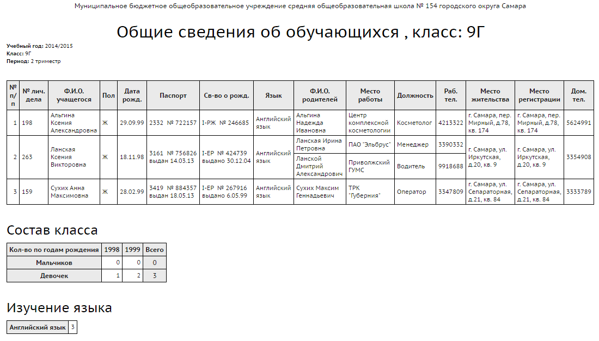

Данный отчет предназначен для классных руководителей и тех сотрудников, которые работают с личными делами учащихся.
С помощью отчета "Общие сведения об обучающихся" Вы сможете получить список класса с информацией для каждого учащегося: № личного дела, ФИО, пол, дата рождения, паспорт, св-во о рождении, изучаемый иностранный язык, ФИО родителей, место работы, должность, раб.телефон, место жительства, место регистрации, дом.телефон.
Перед выполнением отчета есть возможность указать галочками поля (столбцы), которые будут в него включены, таким образом, можно быстро получить именно те данные, которые необходимы.
О полях "Паспорт" и "Свидетельство о рождении"
В поле "Паспорт" выводится тип документа, удостоверяющего личность, согласно правилу:
| · | если у ученика заполнен Паспорт гражданина РФ, - то выводится это значение,
|
| · | иначе если у ученика заполнен Паспорт иностранного гражданина - то выводится это значение,
|
| · | иначе - выводится значение другого типа документа, который заполнен, кроме двух видов свидетельства о рождении,
|
| · | иначе (если ничего не заполнено) - то поле "Паспорт" остаётся пустым.
|
В поле "Свидетельство о рождении" выводится тип документа, удостоверяющего личность, согласно правилу:
| · | если у ученика заполнено Свидетельство о рождении РФ, - то выводится это значение,
|
| · | иначе если у ученика заполнено Свидетельство о рождении, выданное уполномоченным органом иностранного государства, - то выводится это значение,
|
| · | иначе (если ничего не заполнено) - то поле "Свидетельство о рождении" остаётся пустым.
|
Пример отчета:
